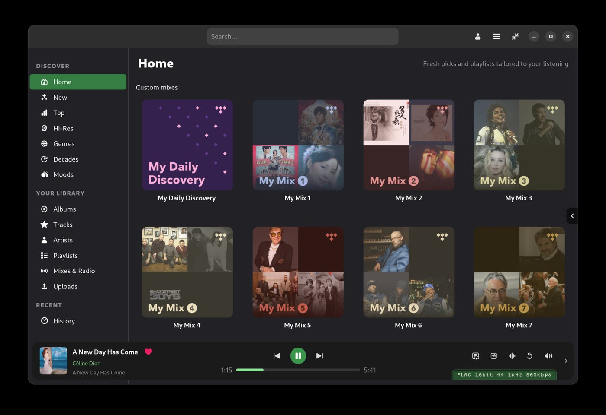
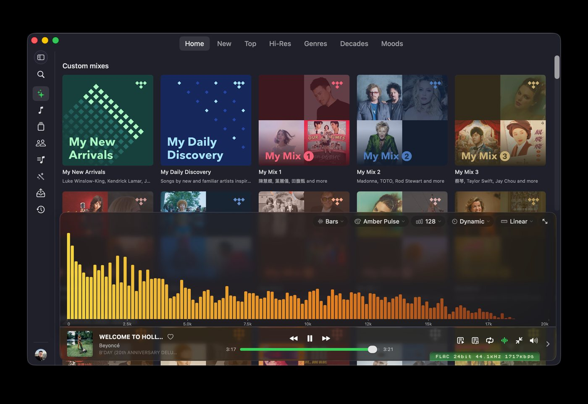
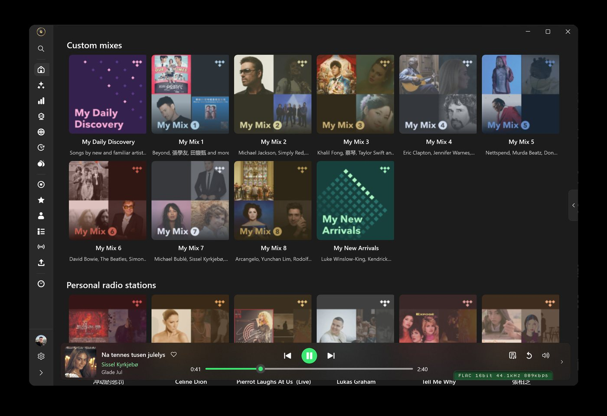

Hi-Res TIDAL player for Linux, macOS and Windows
Bit-perfect TIDAL playback, native on your desktop. FLAC and Hi-Res straight to your DAC, gapless, with lyrics and a spectrum visualizer. Written in Rust.
Free to use. Requires a TIDAL subscription.

Features: bit-perfect TIDAL playback
Bit-perfect output
Untouched PCM from TIDAL to your DAC. Exclusive ALSA on Linux, CoreAudio hog mode on macOS, WASAPI exclusive on Windows.
USB Rawlink
Direct USB audio transport on Linux that bypasses the OS mixer entirely and drives the DAC at the track's own rate and bit depth.
Hi-Res and FLAC
Streams TIDAL's Hi-Res FLAC catalogue with gapless playback and a play bar that shows the format actually reaching the DAC.
Native and fast
One self-contained Rust binary with a native front-end per platform: GTK4 and libadwaita, SwiftUI, WinUI 3. Instant startup, low memory, no Electron.
Your library
Albums, artists, tracks, mixes, playlists and folders, with search, history and TIDAL's editorial pages.
Extras
Spectrum visualizer, level meter, synced lyrics, a DSP chain, MPRIS and media keys, tray icon and scrobbling on Linux.
Install
Every build is on the Releases page. The one-line installer picks the right package for your system on Linux and macOS.
Linux
Arch, Debian 13+, Ubuntu 24.04+, Fedora 43+, openSUSE Tumbleweed, x86_64.
Quick install
curl -fsSL https://raw.githubusercontent.com/yelanxin/OxiTide/main/install.sh | bash
Snap
sudo snap install oxitide
Flatpak
flatpak install --user https://flatpak.oxitide.com/oxitide.flatpakref
Arch (AUR)
yay -S oxitide-bin
macOS
macOS 14 or later. Apple silicon and Intel in one bundle.
curl -fsSL https://raw.githubusercontent.com/yelanxin/OxiTide/main/install.sh | bash
Or unzip OxiTide-<ver>-macos-universal.zip from Releases into Applications. The build is not notarized yet: on first launch choose System Settings → Privacy & Security → Open Anyway.
Windows
Windows 10 (1809+) or Windows 11, 64-bit.
Download OxiTide-<ver>-windows-x64.exe (installer) or the portable zip from Releases. Nothing else to install. The build is not code-signed yet: choose More info → Run anyway when SmartScreen asks.
Native on every platform


FAQ
Is there a native TIDAL app for Linux?
TIDAL does not publish a Linux client. OxiTide is a native GTK4 application for Linux that streams TIDAL, packaged as deb, rpm, Arch package, Snap and Flatpak.
How is OxiTide different from tidal-hifi or the web player?
tidal-hifi wraps the TIDAL web player in Electron, so audio goes through the browser and the system mixer. OxiTide has its own Rust playback engine: it decodes FLAC itself and sends the samples to the DAC bit-perfect, with exclusive device access or USB Rawlink, so a 24-bit / 192 kHz track reaches the DAC as exactly that.
Does it support Hi-Res, FLAC and MQA?
OxiTide plays TIDAL's Hi-Res FLAC (up to 24-bit / 192 kHz) and lossless FLAC tiers, gapless, at the track's own rate. MQA is not decoded; TIDAL has moved its Hi-Res catalogue to FLAC.
Is OxiTide free? Is it open source?
OxiTide is proprietary freeware: free to download and use, with a TIDAL subscription. The source is not public. The earlier Python/GTK edition, hiresTI, remains open source under GPL-3.0.
Which DACs work with USB Rawlink?
Any USB Audio Class 2 DAC. On Linux the package installs a udev rule and a polkit action so the app can claim the device; the first use asks for authorization. Inside Flatpak and Snap the app shows the one-line command to install that rule.